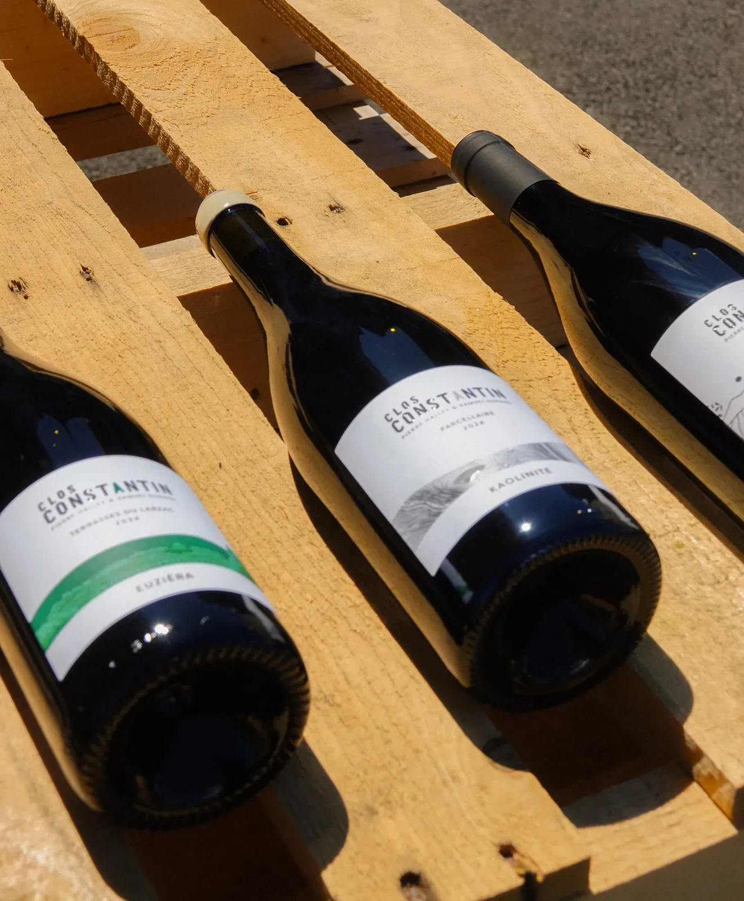
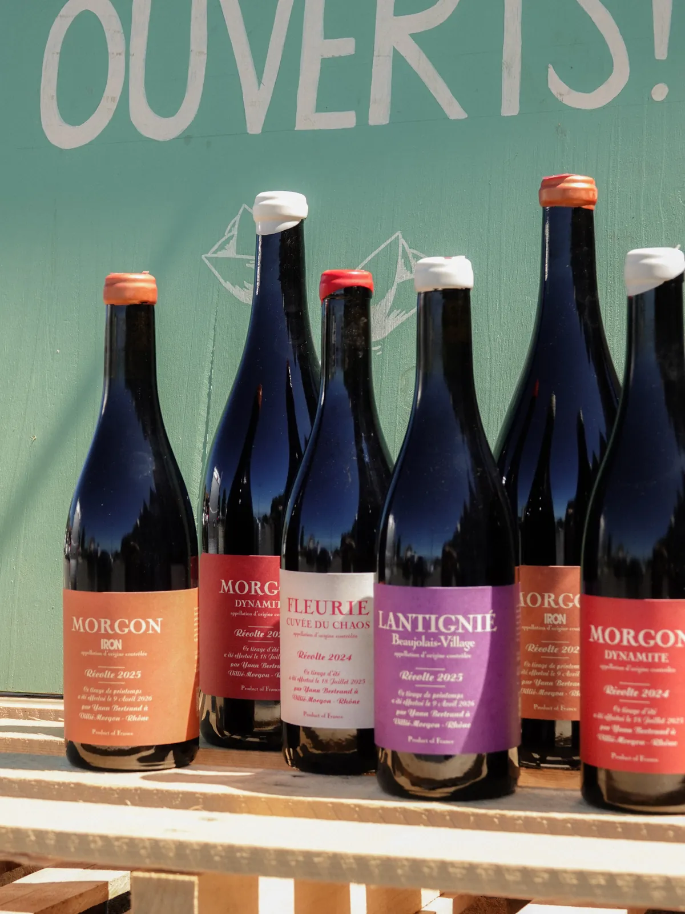
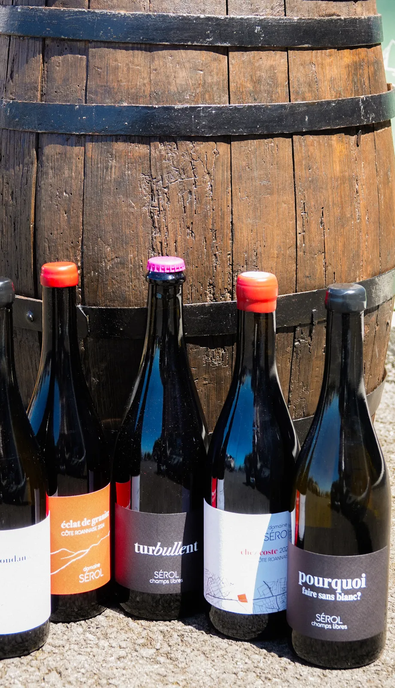
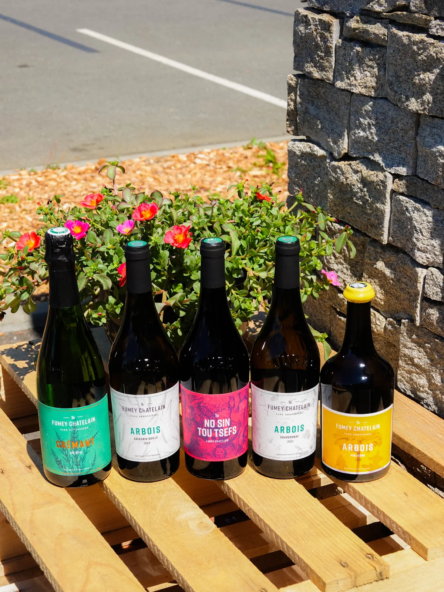
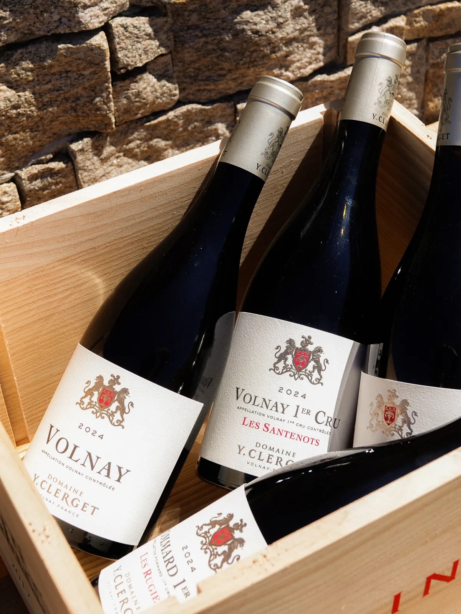
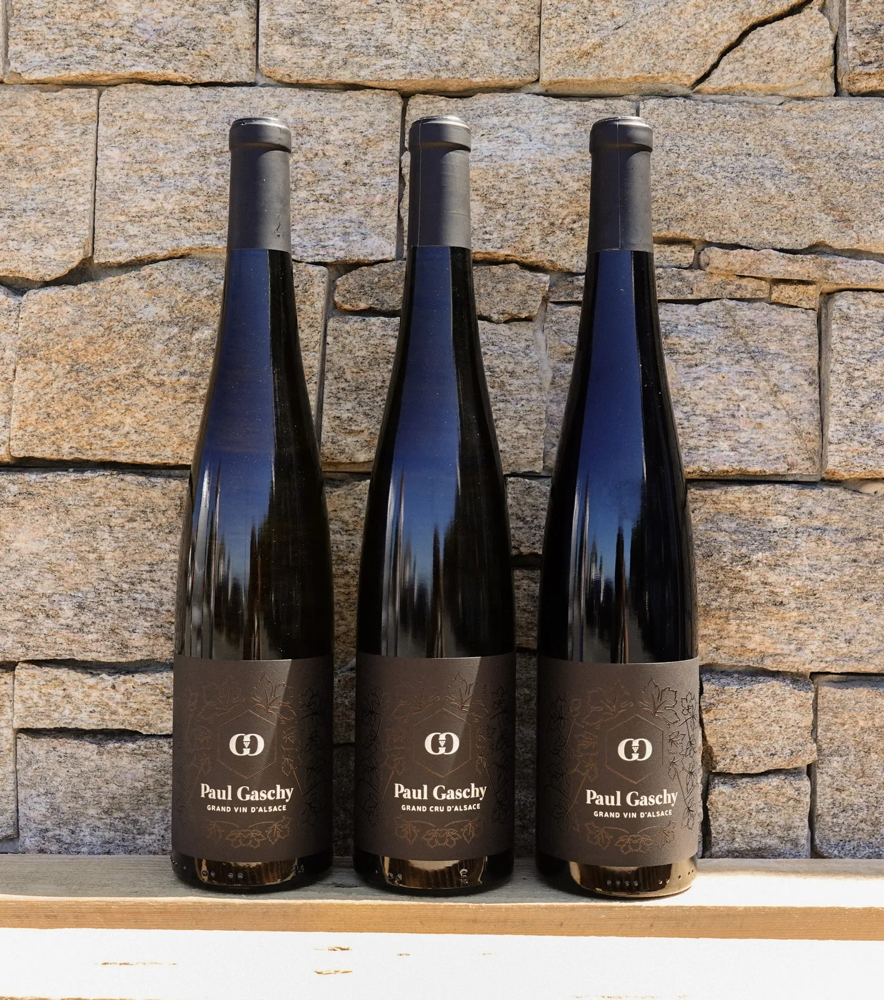

Nos vignerons partenaires
Des femmes et des hommes passionnés, des domaines indépendants et des coups de cœur à découvrir. Clique sur un domaine pour faire connaissance.

LanguedocClos ConstantinDécouvrir →

BretagneLLVDécouvrir →

BeaujolaisYann BertrandDécouvrir →

Côte RoannaiseSerolDécouvrir →

JuraFumey ChatelinDécouvrir →

BourgogneYvon ClergetDécouvrir →

AlsacePaul GaschyDécouvrir →
RhôneFamille de BoelPortrait à venir
BordeauxJean-Yves MilairePortrait à venir